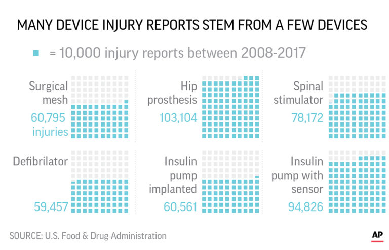

Medical Devices - A Computer Science Presentation
Presented and Made By:
Matias Suxo
ICS3U - Mr.kzebarth
Dangers

Dangers that come with Medical Devices
With some medical devices beeing essential to your suvival sometimes is silly to think the ammount we depend on it. With this in mind there are many dangers with some Medical Devices and the way they are evolving. As mentioned not only can some Devices get hacked/bypassed but have equal chance to malfunction. Sometimes these malfunctions can cause serious damage or death to the user. To avoid this many governements have strict measures and laws to protect its users but even with these measures sometimes operations and devices can be risky and/or expensive. The graphic on the right shows information and facts about Medical device related injuries.